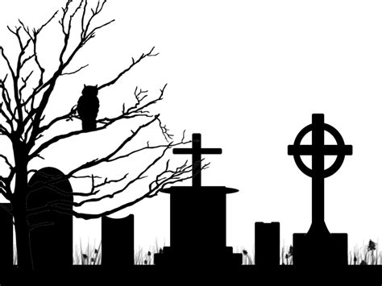

The Heart Horse Memorial Garden
"Welcome to The Heart Horse Memorial Garden, where the good ones rest easy and the others still haunt us.
This special place is dedicated to the horses and ponies who touched our hearts, broke our bones,
emptied our wallets, and now gallop free forever."
0 ponies at rest.


Submit a Memorial
Free to submit. All species and interpretations of "pony" accepted with equal solemnity.
Include: name, dates (optional), epitaph (150 character maximum).
Editorial discretion applies. Submissions by email only.